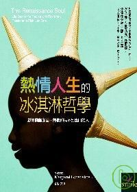

書籍介紹
|  |
熱情人生的冰淇淋哲學
The Renaissance Soul
| 作者： |
瑪格麗特．羅賓絲婷 |
| 原文作者： |
Margaret Lobenstine |
| 譯者： |
劉怡女 |
| 出版社： |
大塊文化 |
| 出版日期： |
2007年10月29日 |
| 語言： |
繁體中文 |
| ISBN： |
9789862130148 |
| 裝訂： |
平裝 |
| 售價： |
280元 |
|
內容簡介
- 你興趣廣泛，好奇心強烈，熱情滿滿，不容易待在一個領域裡，怎麼也難以決定該走上哪一條道路。絕大多數的生涯顧問都會建議你：找出你最重要的長處和優勢，努力發揮它們，在同一個軌道上累積成績與實力，一步一步往往上爬。
- 只有這本書鼓勵你：接受你喜愛朝向多面發展的特質，循著熱情找工作過生活，同時進行多種興趣，隨時可以改變愛好，用熱情來幫你取得金錢與快樂。
- 本書結合了生涯規劃、心理諮商與時間管理的概念和技巧，將會讓你學到：
- 重新認識自己的性格特質，愛上多才多藝的自己。
- 選擇愛好可以像是在吃四色冰淇淋，同時進行幾種你目前最喜歡的「熱情焦點」。
- 用嶄新的眼光尋找下一份工作，或者重新看待現在這份給你薪水的工作。
- 不必轉換職業軌道，也能滿足好幾種愛好。
- 用你熱愛的事物來賺取金錢。
- 把時間管理得既有秩序又有彈性。
- 不必辭職進修，也能獲得新領域的知識。
- 特別建議以下幾種人類從這本書裡找到指引：
- 已展現能力並擔任主管職務，受公司倚重，但耳畔有聲音對你說：「人生還有別的可能性。」
- 善於「打天下」，但不喜「治天下」的人才。喜歡尚未嘗試過的風險，遠勝於已經熟悉的成功。
- 過去兩年來換過四次工作，每次都覺得新工作是正確選擇，但不久又因為想做別的新鮮事而離職。
- 目前從事薪水微薄的基層工作，想換工作但不知還能做什麼，總覺得看不到出路的人。
- 興趣廣泛，期許自己成為一個多才多藝的全能人才，可是不知如何選定大學主修課程的學生。
- 今日世界追求彈性與感性、適應力與創造力。像你這般樣隨時在演化的人種，這正是你的時代。
作者簡介
瑪格麗特．羅賓絲婷 (Margaret Lobenstine)
目前經營「另有出路顧問工作室」(Alternative Approached)，為客戶提供工作生涯發展與人生規劃的諮詢。
輔導過五千名以上的客戶面對各種人生課題。迄今創立過三種截然不同的事業，每一次都在事業有成之後覺得必須轉換跑道。
現在與先生住在美國麻州。